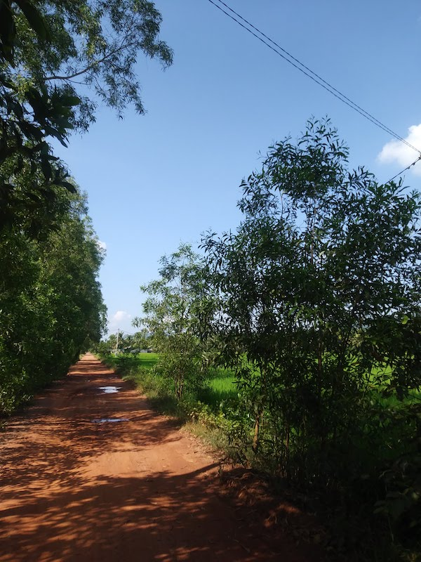
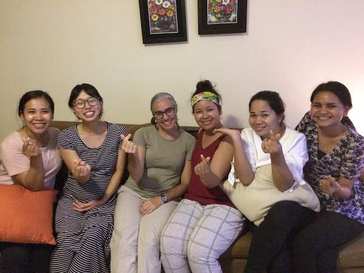

And there will be no more gloom...
 In a province, Kampot Lately, we have been reflecting a lot on hope– What hope do we have as followers of Christ? Why do we still need hope if we have become believers? How important and relevant is this hope? How should we live, anticipating and eagerly preparing for its fulfillment? What role does Christ have in all this?
The beauty of the Isaiah 9 has been helpful for us in this season, with its precise location in a hopeful, yet sorrowful book.
As Christians, we know that Christ being born in the world as a man marked the beginning of his life that needed to be lived in order for Him to die for our sins at Calvary– and equally important, to be risen from the dead. We have been told that Isaiah 9 and other prophecies were designed to tell Israel of God’s plan of redemption and salvation with the coming of the Messiah.
When reading Isaiah recently, it struck me how it seemed like the hope presented in Isaiah 9 was not completed with His ascension. In other words, though Jesus was already born, already died and already rose again, we’re still waiting for the deliverance promised in Isaiah 9. We can see that Israel is still “in anguish” (8:22, 9:1) and far from verse 7 which says: “There will be no end to the increase of His government or of peace, On the throne of David and over his kingdom, To establish it and to uphold it with justice and righteousness From then on and forevermore. The zeal fo the Lord will accomplish this.”
 Bousra Waterfall in Mondulkiri All that to say, I’ve definitely been keeping my eyes more set on the redemption and victory that we know will come when Christ returns.
Bousra Waterfall in Mondulkiri All that to say, I’ve definitely been keeping my eyes more set on the redemption and victory that we know will come when Christ returns.
At the beginning of November, we found out that our baby (due in April) is missing his left arm from the shoulder on and more recently learned that there are some kidney issues. This has caused us to experience many emotions, At the end of the day, we are comforted that the Lord is with us and that we can and need to be thankful for all He gives because we can trust His wisdom and goodness. We praise God that this has caused us to be thinking more intentionally about the things we need to make sure we teach our children about what is important in this life. We praise Him that He is already using this gift as a help to us, to encourage our hearts as we reflect on what we are working for and eagerly anticipating. We know that Christ has saved our souls by paying for our sin and conquering death, but we also know that He isn’t done. That this world and our flesh that has been plagued by sin will be redeemed that He will bring all His work to completion, putting a final end to the enemy that seeks to tear us away from Him.
Ministry Updates
Teaching and Discipleship Opportunities Ryan’s first time preaching
- Ryan had an opportunity to teach at a youth retreat and preach at our local church. We’re grateful for the opportunity, though realize there’s still a long ways to go before being able to teach comfortably in Khmer.
- Rebekah has gotten more involved with the youth girls at our church, lately helping to get other women leaders organized who will take over as we get closer to the baby’s delivery.
- Rebekah also is part of the teaching rotation for the young women’s small group at church.
Dorm Ministry
 One of the girls who live with us, Nary, with Jonathan In October, we welcomed two 18-year-old unbelieving girls to live with us as they study in the city. We decided this with our pastor and our church was ultimately the avenue this opportunity came through. At that time, the church decided to start a “dorm ministry,” meaning that they are housing college-age students, reaching out to them while they study; they are required to join weekly Bible studies, church on Sundays and some other activities. Living with the girls has been very good overall! It has been better than we would have ever thought! They are a help to Rebekah around the house and with Jonathan. We hope that Christ in us will be seen by them and that they will come to know and love our Savior as well. We still face misundstandings due to language barriers and cultural differences, and we often don’t know how they feel or receive our actions, so please pray that the Holy Spirit will continue to work in all of our hearts despite miscommunication.
One of the girls who live with us, Nary, with Jonathan In October, we welcomed two 18-year-old unbelieving girls to live with us as they study in the city. We decided this with our pastor and our church was ultimately the avenue this opportunity came through. At that time, the church decided to start a “dorm ministry,” meaning that they are housing college-age students, reaching out to them while they study; they are required to join weekly Bible studies, church on Sundays and some other activities. Living with the girls has been very good overall! It has been better than we would have ever thought! They are a help to Rebekah around the house and with Jonathan. We hope that Christ in us will be seen by them and that they will come to know and love our Savior as well. We still face misundstandings due to language barriers and cultural differences, and we often don’t know how they feel or receive our actions, so please pray that the Holy Spirit will continue to work in all of our hearts despite miscommunication.
In Siem Reap
Thanksgivings
- We had a chance to take a trip with Bora and Bunry to Siem Reap, both to rest and to spend more time with them.
- Ryan’s older brother Jason was able to come and visit, bringing notes and gifts from our church in Spokane, which was a great encouragement.
- In October, Ryan visited one of the Shalom pastors, Pastor Sovannary, in the province. It was a great chance to get a picture of different ministry dynamics in the province as opposed to the city.
- Ryan received a good bike as a gift from another member on our team, and has been practicing around Phnom Penh, with the goal of hopefully being able to use this in the future to visit remote villages and churches.
Christmas At the Bible College
- We went to the Bible college’s Christmas celebration which had performances, singing, preaching of the Word and lunch together.
- We enjoyed going to a Christmas concert our pastor’s daughter played at, and had dinner afterwards with other members of our church who are able to come.
- Spending time with small groups was special as we celebrated together!
- Rebekah helped organize a children’s music performance for the Sunday Christmas service.
- We had a Christmas get-together with the youth girls from church. They really enjoyed making Christmas cookies!
Making Christmas cookies together!
Prayer Requests
Rebekah and the baby’s health
We are currently having talks with insurance about hospitals, costs, etc. We ask for wisdom in discerning how to decide on healthcare options (i.e. many expats go to Thailand for more serious cases and there are different options here in the city as well). Prayer that these logistical things will go smoothly as well. If giving birth requires traveling to a different city or country, extra decisions about Rebekah departing first with Ryan and Jonathan staying behind will need to be made.
For our emotional and spiritual health
That this would be a time of internal peace, patience, and growth regardless of external circumstances.
Prioritizing
That we would discern what we need to prioritize and what we need to turn down/cancel as our capacity and circumstances change.
For the changing team dynamic
That we would have one mind and heart as we labor for the gospel.
Dorm Ministry
That we would use our time with the girls and with all the dorm kids, at church, home, etc. in a way that is profitable for the Kingdom and as lights in darkness
 Rebekah’s Small Group With Pastor Sovannary A home in Kampot Youth Retreat Leaders  Our church’s youth girls sports program With Jason, Ryan’s brother
Our church’s youth girls sports program With Jason, Ryan’s brother